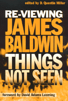

<body bgcolor="#FFFFFF" text="#000000" link="#0000FF" vlink="#CC0000" alink="#CC0000"><center><hr width="350" size="1" align="center" noshade>A focus on Baldwin as an experimental writer<hr width="350" size="1" align="center" noshade><p><a href="https://cdcshoppingcart.uchicago.edu/Cart/ChicagoBook.aspx?ISBN=9781566397360&&PRESS=temple" target="_top">Buy this book!</a> | <a href="https://cdcshoppingcart.uchicago.edu/Cart/Cart.aspx?PRESS=temple" target="_top">View Cart</a> | <a href="https://cdcshoppingcart.uchicago.edu/Cart/Cart.aspx?PRESS=temple" target="_top">Check Out</a></p><p></p></center><!--none//--><h1>Re-Viewing James Baldwin</h1>
<H2>Things Not Seen</H2>
<H2><!-- Foreword by David Adams Leeming --></H2>
<h3>edited by D. Quentin Miller, foreword by David Adams Leeming</h3>
<P>cloth 1-56639-736-7 $82.50, Jan 00, <FONT COLOR=#990033>Out of Stock Unavailable</FONT>
<br>paper 1-56639-737-5 $35.95, Jan 00, <FONT COLOR=#990033>Available</FONT>
<BR> 312 pp
6x9
1&nbsp;figure 13&nbsp;halftones
</P><BLOCKQUOTE><I>"In this much-needed collection we finally find a serious consideration of this late, angry, and still articulate James Baldwin, who understands that the fire is smoldering under the brush of complacency."</I>
<br>&#151<b>David Adams Leeming</b>, from the Foreword<I></I></BLOCKQUOTE>
<p>This new collection of essays presents a critical reappraisal of James Baldwin's work, looking beyond the commercial and critical success of some of Baldwin's early writings such as <i>Go Tell it on the Mountain</i> and <i>Notes of a Native Son</i>. Focusing on Baldwin's critically undervalued early works and the virtually neglected later ones, the contributors illuminate little-known aspects of this daring author's work and highlight his accomplishments as an experimental writer. Attentive to his innovations in style and form, <i>Things Not Seen</i> reveals an author who continually challenged cultural norms and tackled matters of social justice, sexuality, and racial identity. As volume editor D. Quentin Miller notes, "what has been lost is a complete portrait of [Baldwin's] tremendously rich intellectual journey that illustrates the direction of African-American thought and culture in the late twentieth century."
<p>This is an important book for anyone interested in Baldwin's work. It will engage readers interested in literature and African-American Studies.
<BR>&nbsp;<h2>Excerpt</h2><P>Excerpt available at <a href="http://www.temple.edu/tempress">www.temple.edu/tempress</a></p>
<BR>&nbsp;<h2>Contents</h2><P>
<p>Foreword by David Adams Leeming
<br>Introduction &#150 D. Quentin Miller
<br>1. What is in a Sound? The Metaphysics and Politics of Music in <i>The Amen Corner</i> &#150 Saadi Simawe
<br>2. Staying Out of the Temple: The African American Church, and <i>The Amen Corner</i> &#150 Michael Lynch
<br>3. "An Irrevocable Condition"' Constructions of Home and the Writing of Place in <i>Giovanni's Room</i> &#150 Kathleen Drowne
<br>4. Another Look at <i>Another Country</i>: Reconciling Baldwin's Racial and Sexual Politics &#150 Susan Feldman
<br>5. Black-Gay-Man Chaos in <i>Another Country</i> &#150 Charles Toombs
<br>6. Masculinity and (Im)maturity: "The Man Child" and Other Stories in James Baldwin's Gender Studies Enterprise &#150 Yasmin DeGout
<br>7. "A Striking Addiction to Irreality" <i>Nothing Personal</i> and the Legacy of the Photo/Text Genre &#150 Joshua Miller
<br>8. The Black Boy Looks at the Silver Screen: Baldwin as Moviegoer and Witness &#150 Cassandra Ellis
<br>9. Manhood, Musicality, and Male Bonding in <i>Just Above My Head</i> &#150 Warren Carson
<br>10. James Baldwin, Poet &#150 D. Quentin Miller
<br>About the Contributors
</P><BR>&nbsp;<H2>About the Author(s)</H2>
<P><b>D. Quentin Miller</b> is Assistant Professor of English at Gustavus Adolphus College, Saint Peter, MN.</P>
<BR><H2>Subject Categories</H2>
<p><A HREF="/tempress/literature.html" TARGET="_top">Literature and Drama</a>
<BR><A HREF="/tempress/african.html" TARGET="_top">African American Studies</a>
</p>
<p align="center"><a href="https://cdcshoppingcart.uchicago.edu/Cart/ChicagoBook.aspx?ISBN=9781566397360&&PRESS=temple" target="_top">Buy this book!</a> | <a href="https://cdcshoppingcart.uchicago.edu/Cart/Cart.aspx?PRESS=temple" target="_top">View Cart</a> | <a href="https://cdcshoppingcart.uchicago.edu/Cart/Cart.aspx?PRESS=temple" target="_top">Check Out</a></p><p><font face="Arial" size="1"><a href="copyright.html" onMouseOver="window.status='Web Copyright Policy';return true;" onMouseOut="window.status=''" title="Web Copyright Policy">&copy;</a> 2015 <a href="http://www.temple.edu" target="new" onMouseOver="window.status='Link to Temple University home page';return true;" onMouseOut="window.status=''" title="Link to Temple University home page">Temple University</a>. All Rights Reserved. http://www.temple.edu/tempress/titles/1463_reg.html</font></p>